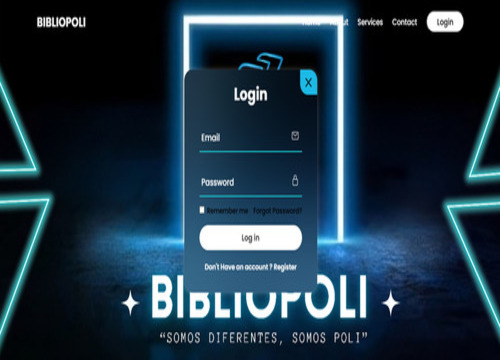

Hola, mi nombre es Kevin Perez
Soy Ingeniero de Datos
Estudiante de Ingeniería de Sistemas con 3+ años de experiencia automatizando procesos e integrando datos con Python y SQL. Diseño pipelines ETL, construyo dashboards en Power BI y trabajo con bases de datos relacionales y plataformas cloud (Azure, AWS, GCP). Certificado en Azure Fundamentals (AZ-900) y CCNA, enfocado en construir soluciones de datos escalables y confiables que generan valor real para el negocio.
Descargar CV - Español Descargar CV - InglésSobre Mí
Soy Kevin Perez, Ingeniero de Datos y Analista de Datos
Estudiante de Ingeniería de Sistemas con 3+ años de experiencia automatizando procesos, desarrollando soluciones backend e integrando datos con Python y SQL. He participado en el diseño de automatizaciones, construcción de pipelines ETL, transformación y validación de datos, y el desarrollo de herramientas enfocadas en optimizar procesos de negocio con tecnologías modernas.
Tengo conocimientos prácticos de Docker, Kubernetes, Power BI, Git, bases de datos relacionales y servicios cloud, con fuerte interés en construir pipelines de datos escalables, arquitecturas de datos y soluciones basadas en automatización e IA. Soy analítico, de aprendizaje continuo, y enfocado en construir soluciones eficientes y mantenibles que generan valor real para el negocio.
Nacimiento : 30 - 03 - 2005
Edad : 21
Web : professionalportfoliokevin.netlify.app
Correo : kevinperezp702@gmail.com
Título : Ingeniería de Sistemas (en curso)
Teléfono : +57 3118724594
Ciudad : Bogotá, Colombia
Estado : Disponible para trabajar
Python / SQL
ETL / Ingeniería de Datos
Power BI / Dashboards
Bases de Datos Relacionales
Cloud (Azure/AWS/GCP)
Docker/Kubernetes
Automatización de Procesos
Redes y Seguridad
Educación
2022 - presente
Politécnico Grancolombiano — Ingeniería de Sistemas
Estudiante de Ingeniería de Sistemas enfocado en Ingeniería de Datos, Cloud Computing, Automatización, DevOps y Desarrollo Backend.
Microsoft Azure AZ-900 Certified Fundamentals
Certificación Microsoft Azure (AZ-900) con conocimientos fundamentales de servicios cloud, seguridad y gestión de costos. Capacitado para implementar y administrar soluciones en la plataforma Azure.
Cisco Networking Academy
Certificación CCNA de Cisco Networking Academy, con experiencia práctica en configuración de redes, resolución de problemas y buenas prácticas de seguridad. Enfocado en enrutamiento, switching e infraestructura escalable a nivel empresarial.
Servicio Nacional de Aprendizaje (SENA)
Formación en Ciberseguridad y Ethical Hacking, cubriendo pruebas de penetración, evaluación de vulnerabilidades y técnicas de seguridad defensiva. Experiencia práctica con Kali Linux y herramientas de seguridad ofensiva/defensiva.
Experiencia
2023 - 2024
TechVentures — Técnico IT (Integración de Datos y ETL)
Diseñé e implementé procesos ETL para consolidar información empresarial de múltiples fuentes. Integré datos para construir dashboards en tiempo real en Power BI, automaticé procesos técnicos mediante scripting, y administré infraestructura virtual y plataformas empresariales.
2024 - 2025
NetAllCorrect — Técnico IT (Automatización y Procesamiento de Datos)
Automaticé tareas operativas con Python y Bash, desarrollé scripts para procesar y analizar información técnica, y administré servidores Windows/Linux garantizando la disponibilidad del servicio. Documenté y estandaricé procesos técnicos, e implementé controles de seguridad y evaluaciones de infraestructura.
2025 - 2026
Inversiones Alcabama — Técnico IT (Automatización y Soporte de Datos)
Automaticé procesos internos con Python para optimizar tiempos operativos, desarrollé procesos ETL para extracción, transformación y validación de datos, y automaticé reportes e indicadores mediante scripts en Python. Administré y optimicé bases de datos relacionales y construí herramientas internas para mejorar la eficiencia del negocio.
Servicios
Analítica y Reportes de Datos
Transformo datos crudos en insights accionables con dashboards de Power BI y reportes personalizados.
ETL e Integración de Datos
Diseño pipelines ETL para extraer, transformar, validar y consolidar datos de múltiples fuentes.
Automatización de Procesos
Optimizo tareas repetitivas y reportes con scripts en Python/Bash para aumentar la productividad.
Cloud y Automatización DevOps
Doy soporte a infraestructura en Azure/AWS/GCP con Docker, Kubernetes y pipelines de CI/CD.
Administración de Bases de Datos
Gestiono, optimizo y mantengo bases de datos relacionales (PostgreSQL, MySQL, SQL Server) para garantizar su confiabilidad.
Soporte Técnico e Infraestructura IT
Brindo soporte técnico y administración de infraestructura para servidores y plataformas empresariales.
Kubernetes y Orquestación de Contenedores
Despliego y escalo aplicaciones en contenedores de forma eficiente con Docker y Kubernetes.
Fundamentos de Redes y Seguridad
Aplico buenas prácticas de redes y seguridad, respaldado por formación CCNA y Ethical Hacking.
Portafolio
Mis Proyectos

Bibliopoli — Plataforma Web
Aplicación web con sistema de autenticación (login/registro) desarrollada para la comunidad del Politécnico Grancolombiano.
Ver proyectoContacto
¿Tienes alguna pregunta?
ESTOY A TU SERVICIO
Llámame al
+57 3118724594
Ubicación
Bogotá, Colombia
Correo
kevinperezp702@gmail.com
Sitio Web
professionalportfoliokevin.netlify.app